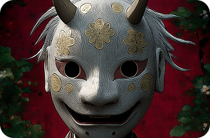

БАКУ
Традиционный японский пожиратель дурных снов, баку, был знаком японцам с эпохи Муромати.

Традиционный японский пожиратель дурных снов, баку, был знаком японцам с эпохи Муромати.
Считается, что если положить в кошелек сброшенную змеиную кожу (особенно шкурку белой или желтой змеи), это принесет удачу, богатство и деньги никогда не закончатся.
Порог считается границей между внешним миром (грязным) и внутренним миром дома (чистым). Наступать на него — значит проявить неуважение к дому и потревожить духов.

Японские крестьяне считали, что этот амулет обладает магической силой.